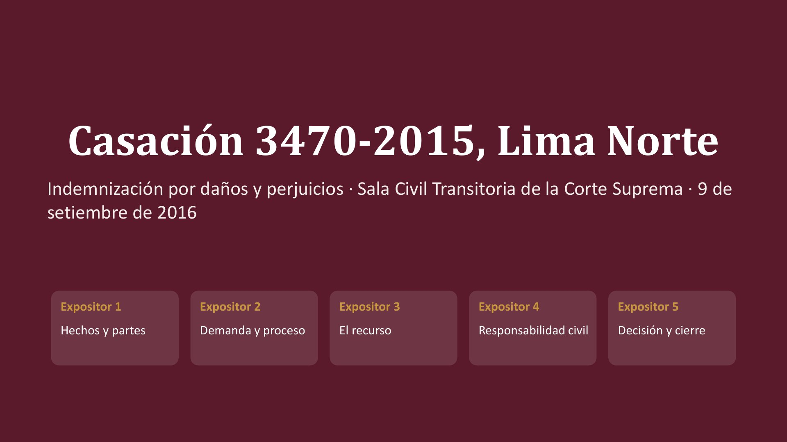
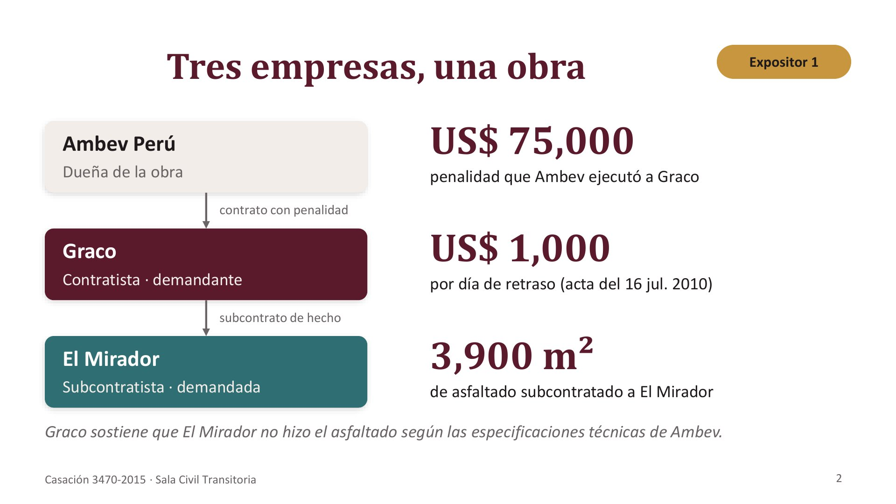
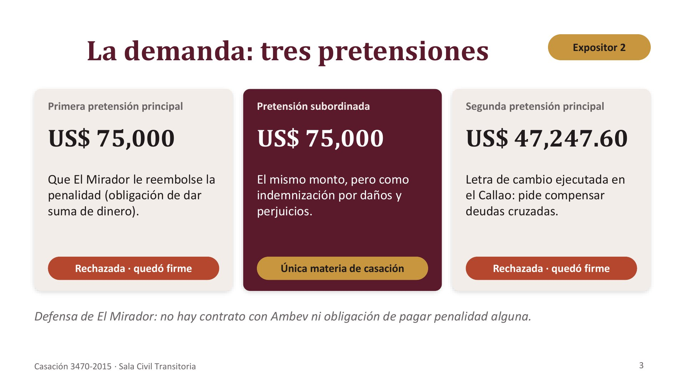
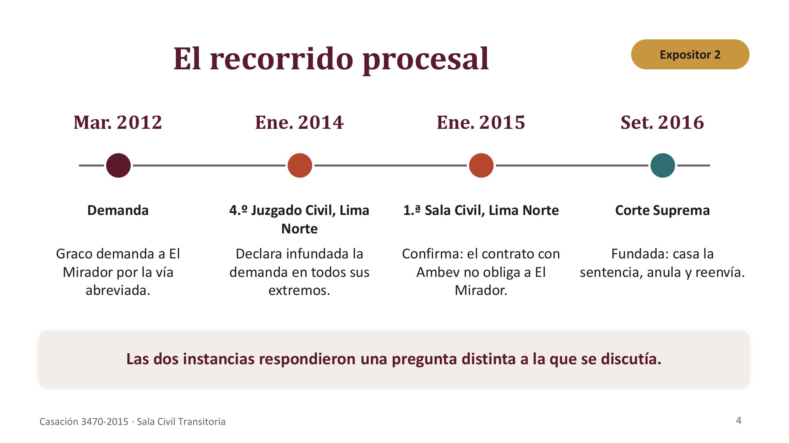
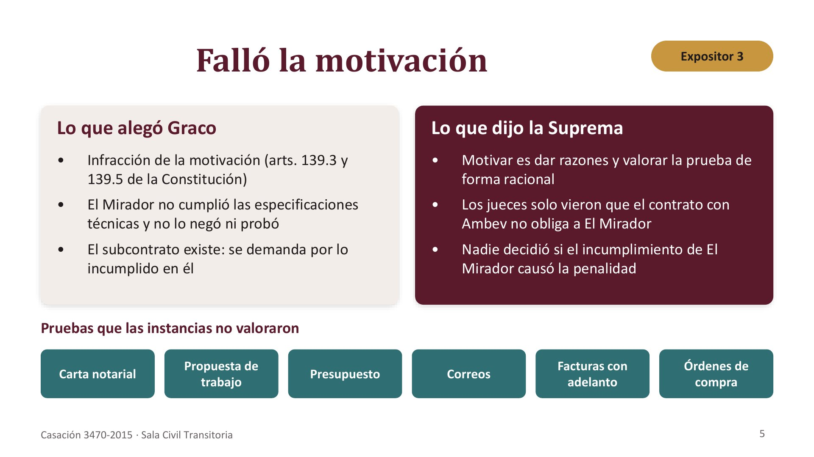
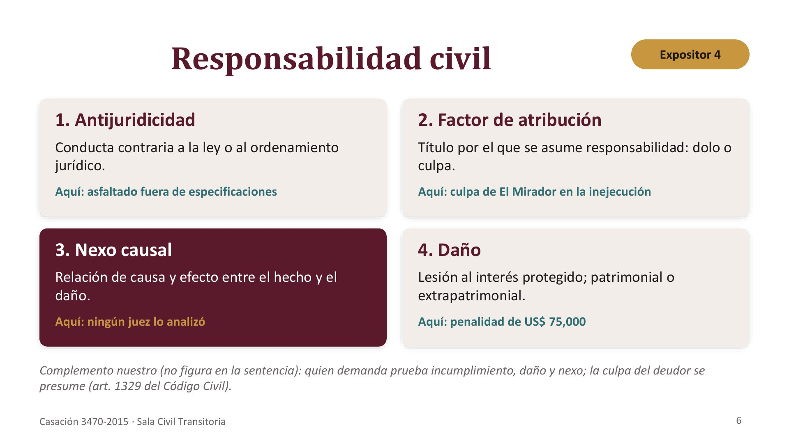
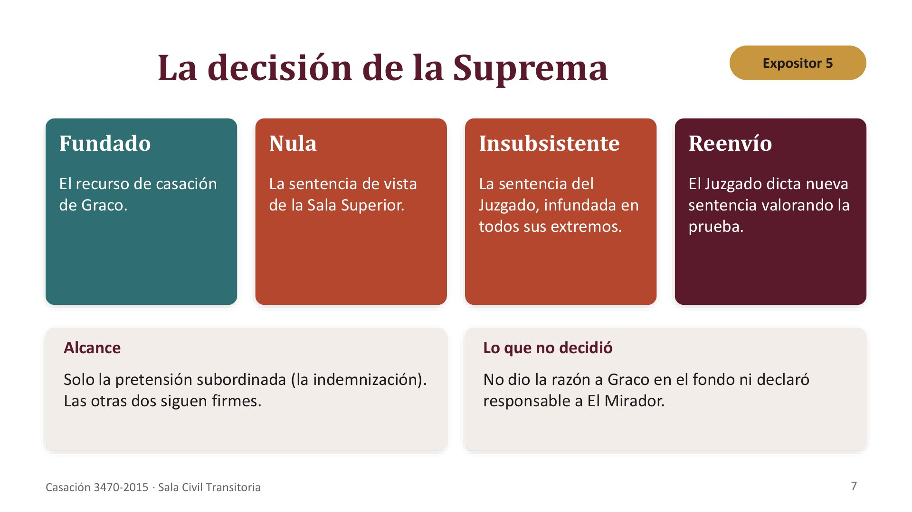
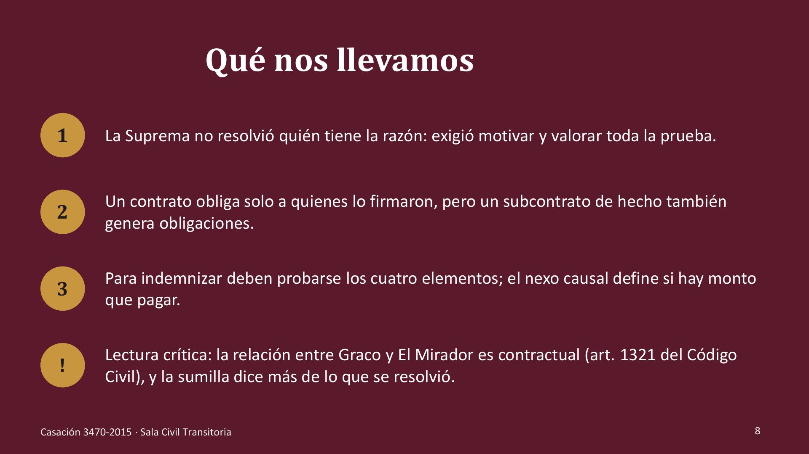

Casación 3470-2015, Lima Norte · Indemnización por daños y perjuicios · Sala Civil Transitoria de la Corte Suprema · 9 de · setiembre de 2016 · Expositor 1 · Expositor 2 · Expositor 3 · Expositor 4 · Expositor 5 · Hechos y partes · Demanda y proceso · El recurso · Responsabilidad civil · Decisión y cierre

Tres empresas, una obra · Ambev Perú · US$ 75,000 · Dueña de la obra · penalidad que Ambev ejecutó a Graco · Expositor 1 · contrato con penalidad · Graco · US$ 1,000 · Contratista · demandante · por día de retraso (acta del 16 jul. 2010) · subcontrato de hecho · El Mirador · 3,900 m² · Subcontratista · demandada · de asfaltado subcontratado a El Mirador · Graco sostiene que El Mirador no hizo el asfaltado según las especificaciones técnicas de Ambev.

La demanda: tres pretensiones · Expositor 2 · Primera pretensión principal · Pretensión subordinada · Segunda pretensión principal · US$ 75,000 · US$ 75,000 · US$ 47,247.60 · Que El Mirador le reembolse la · penalidad (obligación de dar · suma de dinero). · El mismo monto, pero como · indemnización por daños y · perjuicios. · Letra de cambio ejecutada en · el Callao: pide compensar · deudas cruzadas. · Rechazada · quedó firme · Única materia de casación · Rechazada · quedó firme · Defensa de El Mirador: no hay contrato con Ambev ni obligación de pagar penalidad alguna.

El recorrido procesal · Expositor 2 · Mar. 2012 · Ene. 2014 · Ene. 2015 · Set. 2016 · Demanda · 4.º Juzgado Civil, Lima · Norte · 1.ª Sala Civil, Lima Norte · Corte Suprema · Graco demanda a El · Mirador por la vía · abreviada. · Declara infundada la · demanda en todos sus · extremos. · Confirma: el contrato con · Ambev no obliga a El · Mirador. · Fundada: casa la · sentencia, anula y reenvía. · Las dos instancias respondieron una pregunta distinta a la que se discutía.

Falló la motivación · Expositor 3 · Lo que alegó Graco · Lo que dijo la Suprema · • · Infracción de la motivación (arts. 139.3 y · 139.5 de la Constitución) · • · Motivar es dar razones y valorar la prueba de · forma racional · • · El Mirador no cumplió las especificaciones · técnicas y no lo negó ni probó · • · Los jueces solo vieron que el contrato con · Ambev no obliga a El Mirador · • · El subcontrato existe: se demanda por lo · incumplido en él · • · Nadie decidió si el incumplimiento de El · Mirador causó la penalidad · Pruebas que las instancias no valoraron · Carta notarial · Propuesta de · trabajo · Presupuesto · Correos · Facturas con · adelanto · Órdenes de · compra

Responsabilidad civil · Expositor 4 · 1. Antijuridicidad · 2. Factor de atribución · Conducta contraria a la ley o al ordenamiento · jurídico. · Título por el que se asume responsabilidad: dolo o · culpa. · Aquí: asfaltado fuera de especificaciones · Aquí: culpa de El Mirador en la inejecución · 3. Nexo causal · 4. Daño · Relación de causa y efecto entre el hecho y el · daño. · Lesión al interés protegido; patrimonial o · extrapatrimonial. · Aquí: ningún juez lo analizó · Aquí: penalidad de US$ 75,000 · Complemento nuestro (no figura en la sentencia): quien demanda prueba incumplimiento, daño y nexo; la culpa del deudor se · presume (art. 1329 del Código Civil).

La decisión de la Suprema · Expositor 5 · Fundado · Nula · Insubsistente · Reenvío · El recurso de casación · de Graco. · La sentencia de vista · de la Sala Superior. · La sentencia del · Juzgado, infundada en · todos sus extremos. · El Juzgado dicta nueva · sentencia valorando la · prueba. · Alcance · Lo que no decidió · Solo la pretensión subordinada (la indemnización). · Las otras dos siguen firmes. · No dio la razón a Graco en el fondo ni declaró · responsable a El Mirador.

Qué nos llevamos · La Suprema no resolvió quién tiene la razón: exigió motivar y valorar toda la prueba. · Un contrato obliga solo a quienes lo firmaron, pero un subcontrato de hecho también · genera obligaciones. · Para indemnizar deben probarse los cuatro elementos; el nexo causal define si hay monto · que pagar. · ! · Lectura crítica: la relación entre Graco y El Mirador es contractual (art. 1321 del Código · Civil), y la sumilla dice más de lo que se resolvió.